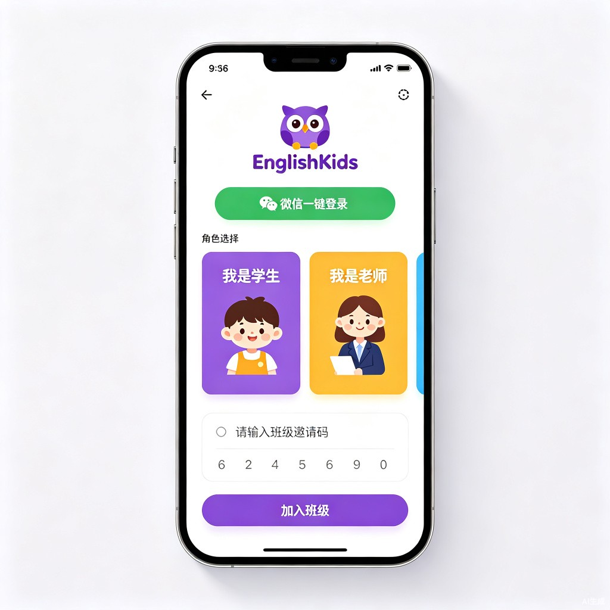
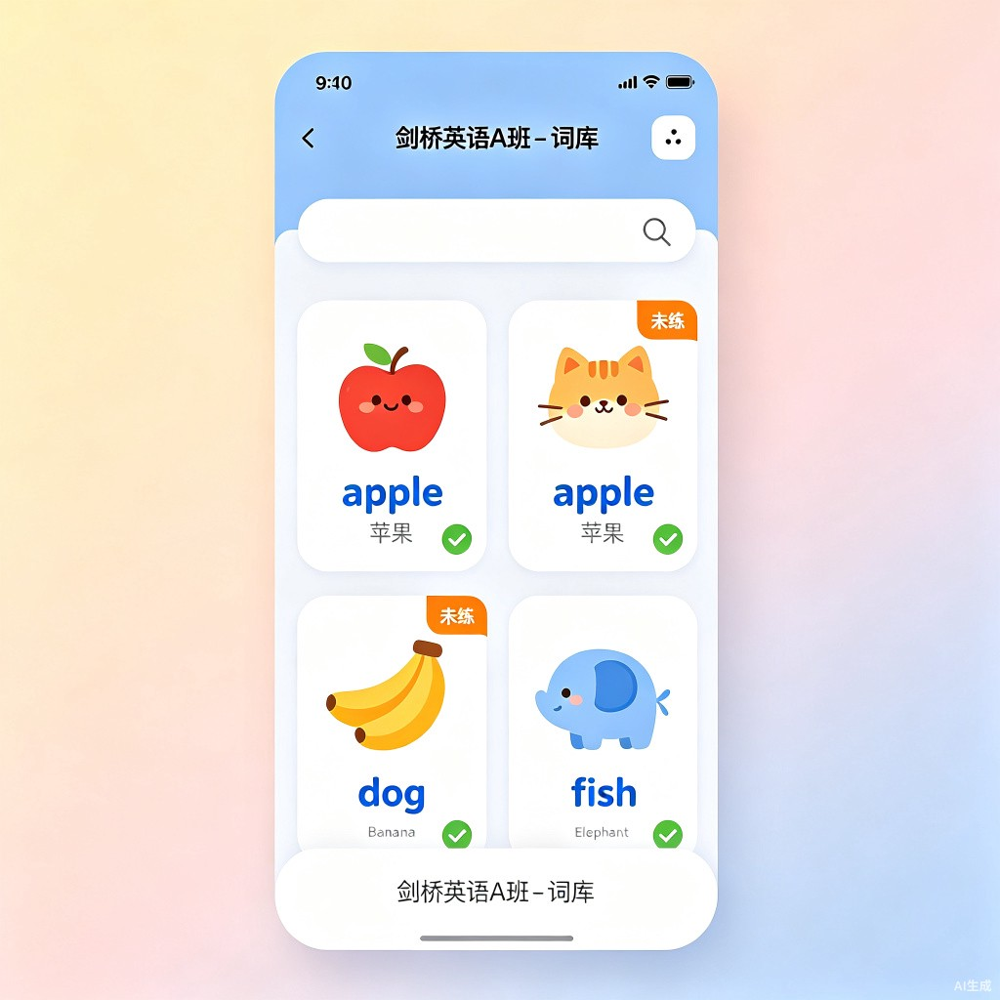
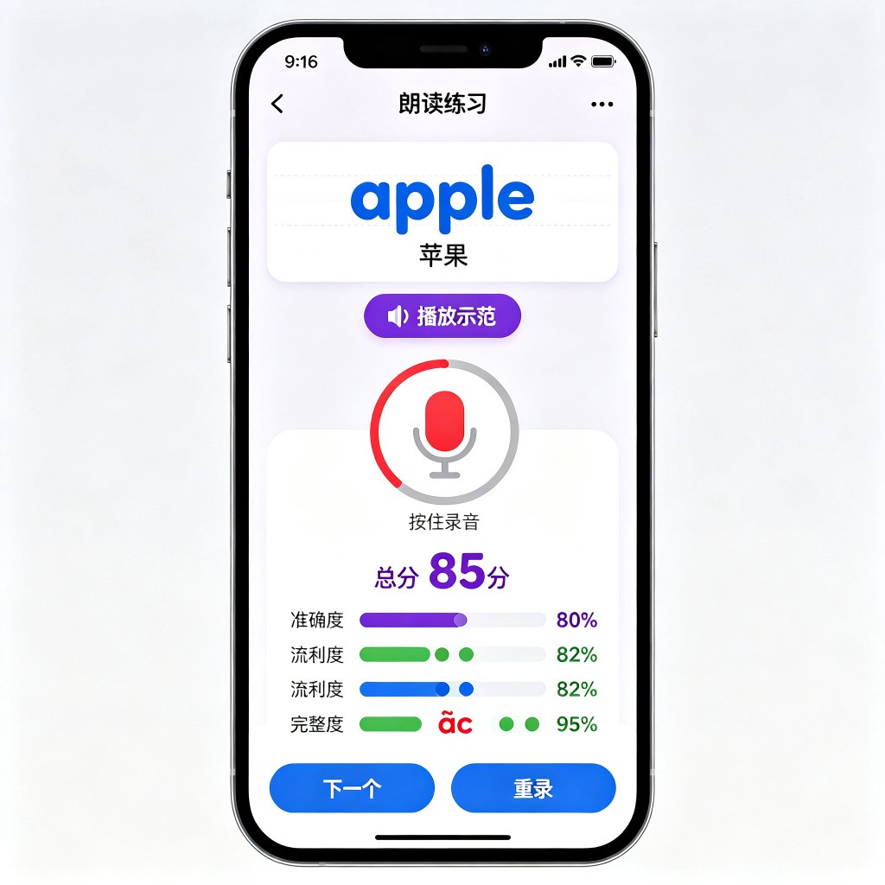
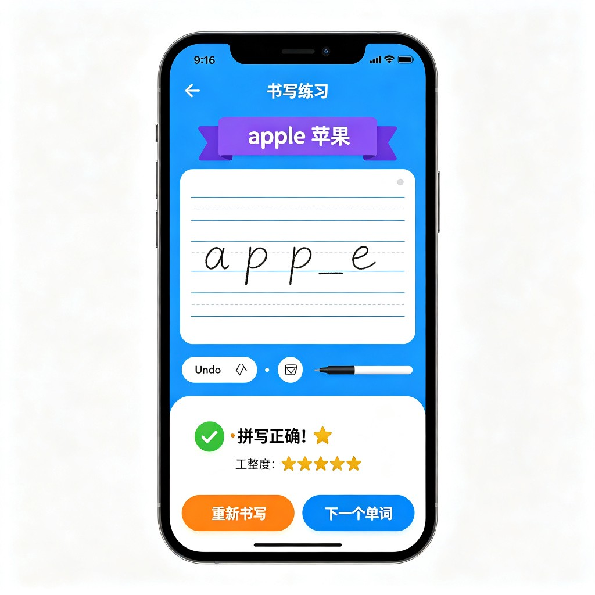
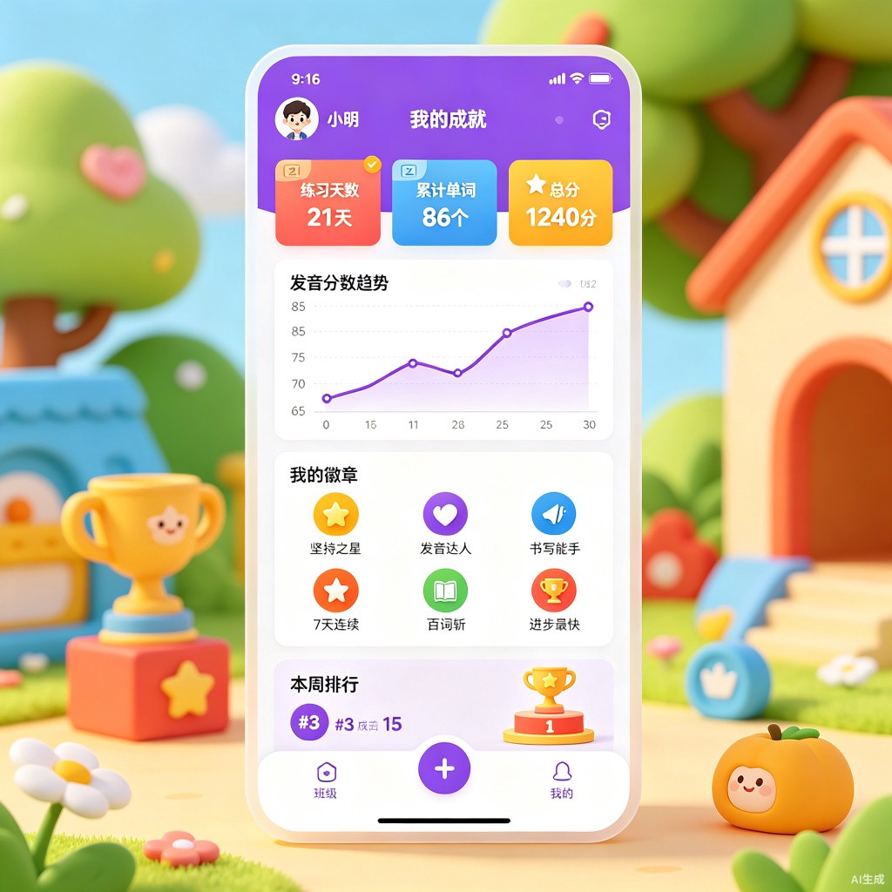
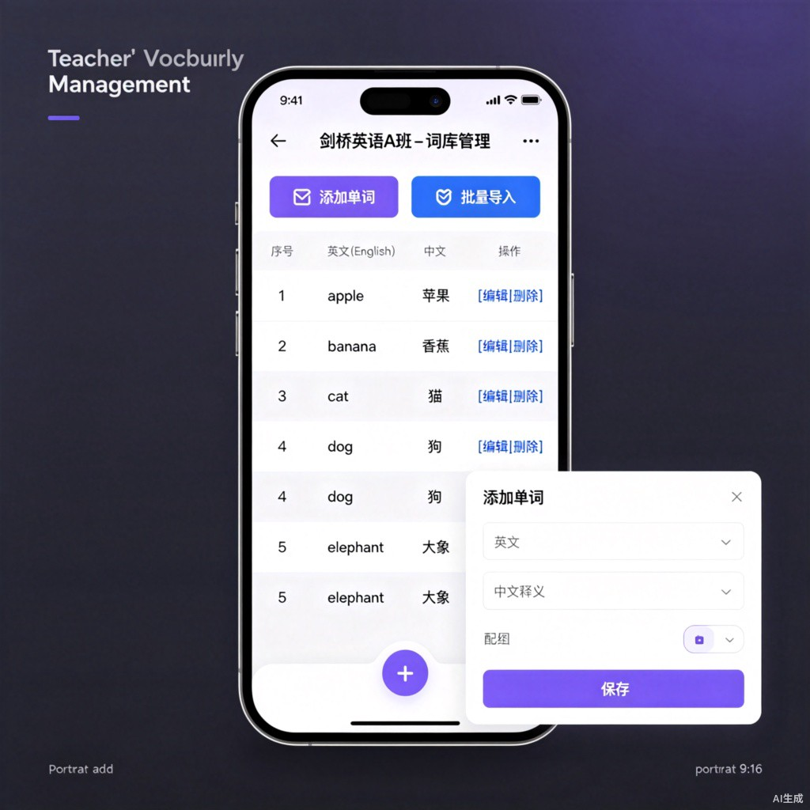
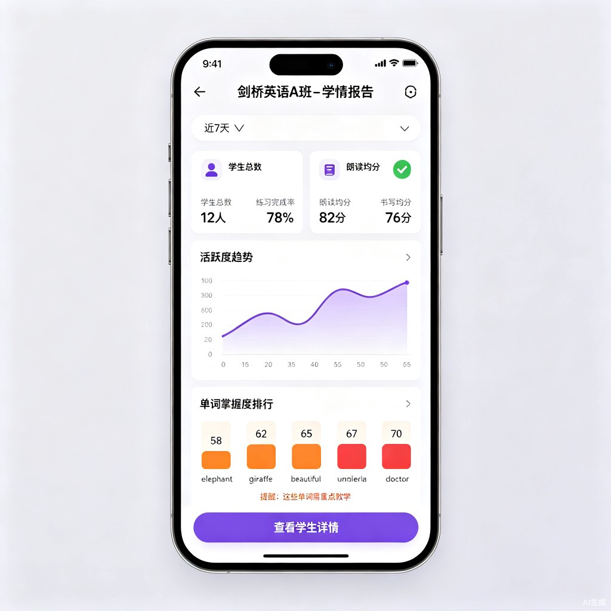
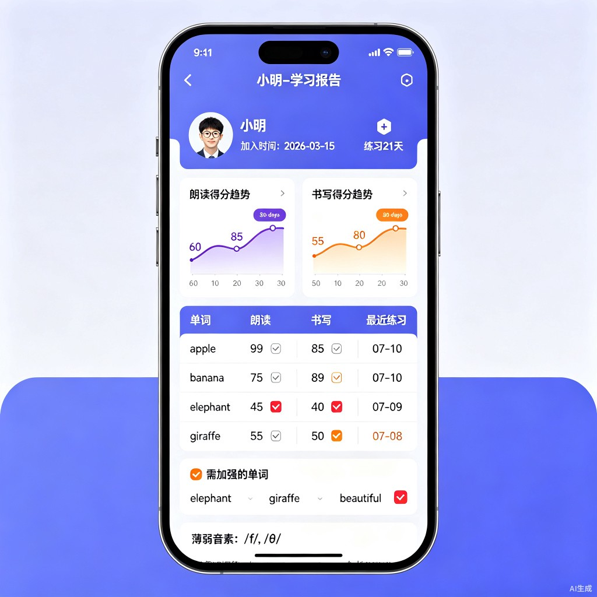

全面展示学生端、教师端、后端服务与 AI 能力层的交互关系
graph TB
subgraph WX["微信小程序端"]
direction LR
S[("👦 学生端")]
T[("👩🏫 教师端")]
end
subgraph STUDENT["学生功能模块"]
direction TB
S1["🎯 加入班级"]
S2["📚 词库浏览"]
S3["🎙️ 朗读练习"]
S4["✏️ 书写练习"]
S5["🏆 个人成就"]
end
subgraph TEACHER["教师功能模块"]
direction TB
T1["📋 班级管理"]
T2["📝 词库管理"]
T3["📊 学情概览"]
T4["👤 学生报告"]
end
subgraph BACKEND["后端服务"]
direction LR
B1["API Gateway"]
B2["用户服务"]
B3["班级服务"]
B4["词库服务"]
B5["练习记录"]
B6["报表引擎"]
end
subgraph AI["AI 能力层"]
direction LR
A1["腾讯智聆 SOE"]
A2["微信 OCR"]
end
S -->|登录/授权| B1
T -->|登录/授权| B1
B1 --> B2
B1 --> B3
B1 --> B4
B1 --> B5
B1 --> B6
S1 -->|输入邀请码| B3
S2 -->|获取词库| B4
S3 -->|上传音频| B1
S4 -->|上传手写图片| B1
B1 -->|评测请求| A1
B1 -->|OCR 请求| A2
A1 -->|评分+纠错| B5
A2 -->|识别结果| B5
T1 -->|创建/管理| B3
T2 -->|上传/编辑| B4
T3 -->|查询概览| B6
T4 -->|查询详情| B5
B5 --> B6
T3 --> S5
flowchart TD
A["📱 打开小程序"] --> B["🔐 微信授权登录"]
B --> C{"首次使用?"}
C -->|是| D["选择角色: 学生"]
C -->|否| E["进入首页"]
D --> F["填写: 昵称 + 年龄"]
F --> G["输入班级邀请码"]
G --> H["加入班级成功"]
H --> E
E --> I["班级列表"]
I --> J["点击班级 → 进入词库"]
J --> K{"选择练习模式"}
K -->|朗读| L["🎙️ 朗读评测"]
K -->|书写| M["✏️ 书写评测"]
L --> L1["查看单词 + 听示范音"]
L1 --> L2["按住录音"]
L2 --> L3["上传音频 → AI 评测"]
L3 --> L4["查看评分:
准确度 / 流利度 / 完整度"]
L4 --> L5{"重新练习?"}
L5 -->|是| L1
L5 -->|否| L6["下一个单词"]
M --> M1["查看目标单词"]
M1 --> M2["在画布上手写"]
M2 --> M3["提交 → OCR 识别"]
M3 --> M4{"拼写正确?"}
M4 -->|✅ 正确| M5["显示得分 + 工整度"]
M4 -->|❌ 错误| M6["标注错误字母"]
M5 --> M7{"重新练习?"}
M6 --> M7
M7 -->|是| M2
M7 -->|否| M8["下一个单词"]
I --> N["🏆 个人成就"]
N --> N1["练习天数统计"]
N --> N2["发音分数趋势"]
N --> N3["徽章与星星"]
flowchart TD
A["📱 打开小程序"] --> B["🔐 微信授权登录"]
B --> C{"首次使用?"}
C -->|是| D["选择角色: 教师"]
C -->|否| E["教师首页"]
D --> F["填写: 姓名 + 学校"]
F --> E
E --> G["📋 班级管理"]
G --> G1["+ 创建新班级"]
G1 --> G2["设置: 班级名称 + 学段"]
G2 --> G3["生成 6 位邀请码"]
G3 --> G4["分享邀请码到微信群"]
E --> H["📝 词库管理"]
H --> H1["选择目标班级"]
H1 --> H2{"添加方式?"}
H2 -->|手动添加| H3["逐条输入:
英文 + 中文释义 + 分组"]
H2 -->|批量导入| H4["上传 Excel 文件"]
H3 --> H5["保存到词库"]
H4 --> H5
E --> I["📊 学情报告"]
I --> I1["选择班级"]
I1 --> I2["班级数据概览:
完成率 / 平均分 / 活跃度"]
I2 --> I3{"查看详情?"}
I3 -->|是| I4["点击具体学生"]
I3 -->|否| I5["返回首页"]
I4 --> I6["学生详细报告:
练习天数 / 单词得分 / 薄弱项"]
G --> G5["学生列表管理"]
G5 --> G6["查看学生名单"]
G6 --> G7{"需要移除?"}
G7 -->|是| G8["移除学生
(数据保留)"]
G7 -->|否| G4
覆盖登录加入班级 → 词库浏览 → 朗读练习 → 书写练习 → 成就展示

微信授权登录 → 选择"学生"角色 → 输入老师给的邀请码加入班级
学生端展示已加入的班级，卡片包含班级名、老师、词库数量、今日待练习数
学生端
以卡片形式展示单词（英文+中文+配图），标注已练习/未练习状态，点击进入练习
学生端
听示范发音 → 跟读录音 → AI 三维度打分（准确度/流利度/完整度）→ 音素纠错
学生端
四线格手写区 → 撤销/清除/笔触 → 提交识别 → 拼写正确性 + 工整度反馈
学生端
练习天数、累计单词数、发音分数趋势图、获得的徽章和星星激励
学生端覆盖班级创建 → 词库管理 → 学情概览 → 学生详情报告
创建班级、生成邀请码、查看学生名单、复制邀请码分享到微信群
教师端
手动添加单词 / Excel 批量导入 / 分组管理 / 编辑删除，支持配图上传
教师端
完成率、平均分、活跃度趋势图表、薄弱单词排行 —— 一眼掌握班级学情
教师端
单个学生的练习天数、每个单词朗读/书写得分、发音薄弱音素、错误汇总
教师端10 张核心页面原型，覆盖学生端和教师端全部功能模块
微信授权登录 → 选择角色 → 输入邀请码加入班级
已加入班级卡片（名称/老师/词库数/待练习）
英文+中文+配图卡片，标注练习状态
AI 打分（准确度/流利度/完整度）+ 音素纠错
Canvas 手写 → OCR 识别 → 拼写+工整度反馈
练习天数 / 分数趋势 / 徽章激励
创建班级 / 邀请码 / 学生名单
手动添加 / Excel 批量导入 / 分组
完成率 / 平均分 / 趋势 / 薄弱词
单词得分 / 发音弱点 / 错误汇总